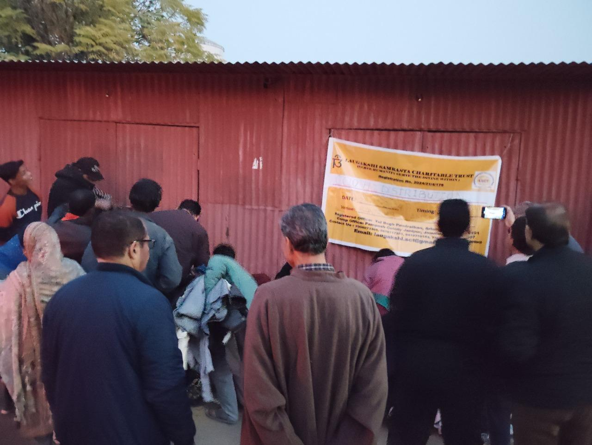
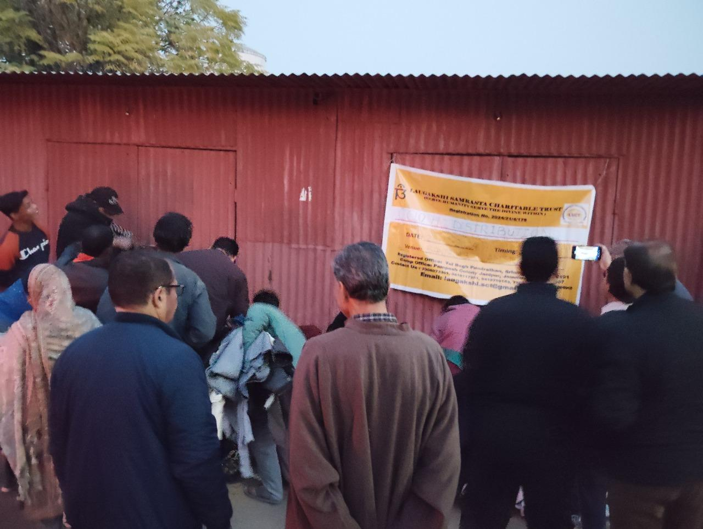
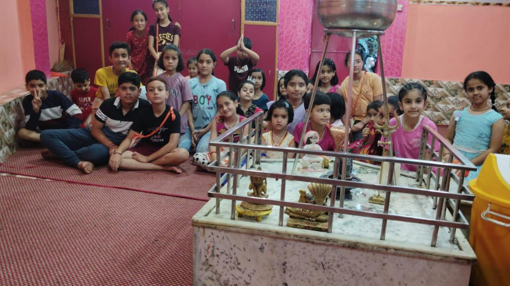
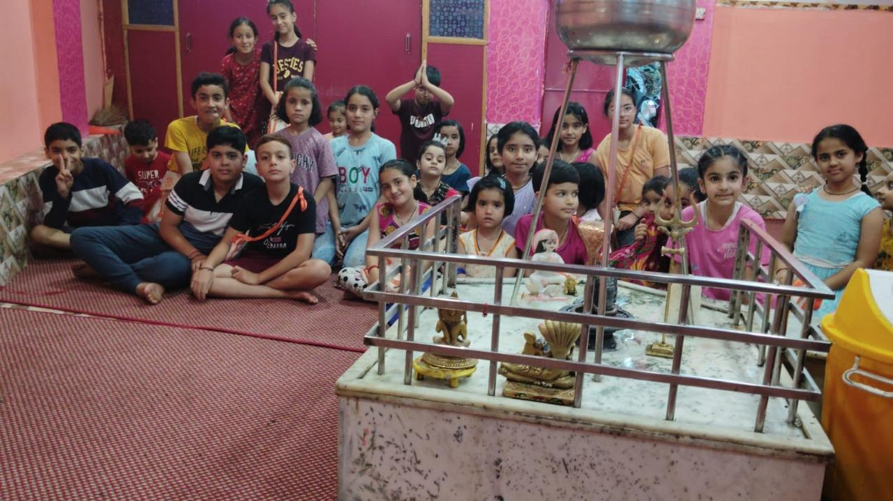

Serve Humanity, Serve the Divine Within
Promoting social welfare, compassion, and equality since 2024
Reg. No: 2024/21/4/178
Our Activities (2024–2025)
- Medical Camp at Muthi, Jammu (20-10-2024): Free consultations, ECG, and blood tests for 50+ beneficiaries.
- Distribution of Woollen Clothes (25-12-2024): Warm clothing distributed to underprivileged families in Jammu.
- Sweaters for School Children (14-01-2025): 50 students at Govt. Middle School Jagti received new sweaters.
- Education Support: Scholarships totaling ₹90,000 for 13 orphan students.
- Marriage Support: Assistance with essential items for a poor girl’s marriage in Samba.
- Religious Conference: Promoted Sanatan Dharma, Bhakti Marg, and seva.
- Online Spiritual Classes: Daily sessions on Shrimad Bhagavad Gita and rituals.
- Online Gita Classes: Regular since 2013, promoting Gita teachings.
- Children’s Gita Classes (Vessu, Anantnag): For youth to learn values and scriptures.
Medical Camp At Muthi, Jammu On 20-10-2024
In an effort to provide essential healthcare services to those in need, our trust organized a medical camp at Muthi, Jammu. The camp offered free medical consultations by experienced doctors and included free blood tests, ECG and USG for all attendees. Approximately 50 individuals from the surrounding areas benefitted from this initiative. The trustees actively participated as volunteers, assisting patients and ensuring the smooth operation of the camp. The event aimed to create awareness about general health, encourage early diagnosis of medical conditions, and provide basic healthcare support to underprivileged communities.
Distribution Of Woollen Clothes To Underprivileged People On 25-12-2024
 

Recognizing the hardships faced by those living below the poverty line, especially during the harsh winters, our trust distributed woollen clothes to needy families residing in remote areas of Jammu (Muthi, Barnai, Patoli, Nagrota). Volunteers personally visited these areas to ensure that warm clothing reached those who required it the most. This initiative provided relief to many individuals, especially children and elderly people, protecting them from the cold and improving their quality of life.
Distribution Of Woollen Sweaters To 50 Students Of Govt. Middle School Jagti On 14-01-2025
Laugakshi Samrasta Charitable Trust carried out a heart warming initiative by distributing sweaters to 50students of Government Middle School Jagti. This act of kindness brought joy to the children and reinforced the trust’s commitment to supporting local communities. Such gestures not only brighten young lives but also encourage generosity and compassion among society.
Financial Support/ Scholarship For Children’s Education
Our trust firmly believes in the power of education and is committed to supporting children from economically weaker sections of society. We have taken the initiative to arrange and sponsor school fees for underprivileged children, ensuring that financial constraints do not hinder their academic growth. By providing this assistance, we aim to empower children with knowledge and skills that will help them build a brighter future. Recently we have provided financial assistance and scholarships to Thirteen (13) underprivileged orphan students amounting to around Rs.90,000 till date and likely to continue this process.
Marriage Support

The trust has also provided almost all essential items for marriage of a poor girl at Samba and trust officials personally handover the same to family and also blessed the couple.
Religious Conferences
Last year, our Trust organized a religious conference focused on promoting spiritual values and cultural tradition. The event brought together renowned spiritual leaders and scholars who delivered enlightening talks on Sanatan Dharma, devotion, and ethical living. The conference received an excellent response from the community and served as a significant platform for spiritual dialogue and inspiration. Special attention was given to themes such as Sanatan Dharma, Bhakti Marg, and the role of seva (selfless service) in spiritual growth. The event not only fostered a deeper understanding of our sacred traditions but also inspired the youth to connect with their roots. We are grateful for the enthusiastic support of our volunteers, donors, and participants, whose collective efforts made the conference a spiritually uplifting and memorable experience.
Online Gita Classes
In an effort to spread awareness about the teachings of the Bhagavad Gita, our trust has initiated online Gita classes for the community since 2013. These sessions aim to educate participants about the spiritual and philosophical essence of the Gita, highlighting its importance in leading a balanced and fulfilling life. The classes have received an encouraging response, with people from various backgrounds joining to enhance their understanding of this sacred text.
Gita Classes At KP Colony Vessu, Anantnag
 

For the past 12 years, the trust has been organizing Geeta Ji classes at KP Colony, Vessu, specifically for children of different age groups. These sessions aim to instill moral values, spiritual understanding, and cultural awareness through the teachings of the Bhagavad Gita. Conducted in a child-friendly and interactive manner by experienced instructors, the classes help young minds connect with the timeless wisdom of our scriptures. The trust remains committed to nurturing the next generation with strong ethical foundations and invites more children to benefit from this noble initiative.